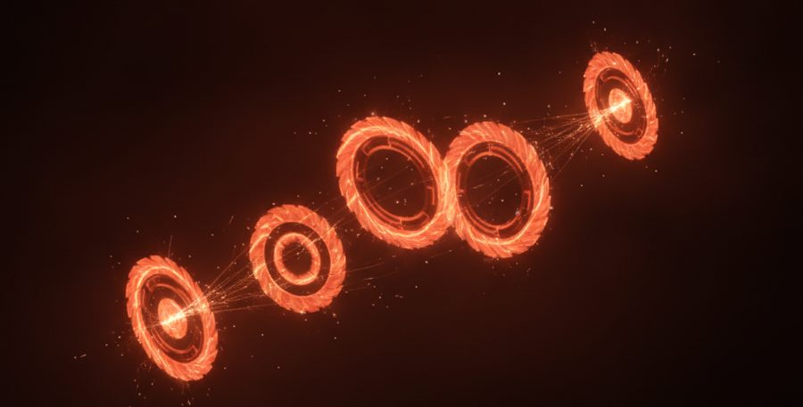
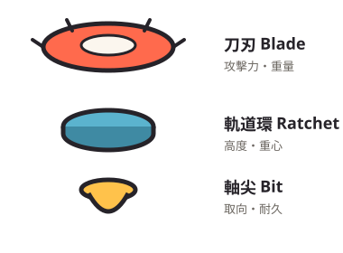
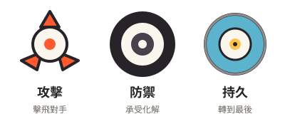

配件怎麼搭，陀螺才會更強？
三句話看完
- 三部位是刀刃、軌道環、軸尖
- 上層決定攻擊力，下層決定續航
- 軸尖與齒條屬耗材，需定期保養
同樣的零件，配法不同，強度天差地遠。這篇帶你理解戰鬥陀螺的三大部位各自負責什麼、怎麼影響戰鬥取向，以及幾個常見的進階搭配方向。讀完你就能開始「自己調」，而不是只能照抄別人的配置。

三大部位，各管什麼？

現行戰鬥陀螺（以 Beyblade X 為例）大致由三個可替換部位組成，三者搭配決定整顆的個性：
- 刀刃／本體（上層）：決定主要的攻擊形狀、重量分佈與打擊感，是「取向」的核心。
- 軌道環（中層）：影響重心、外緣造型與和場地的互動，左右穩定度與特殊機制。
- 軸尖（下層）：接觸場地的點，決定走位、持久與摩擦——同一顆換軸尖，個性可以完全改變。
記一個原則：上層決定「想做什麼」，下層決定「做得久不久」。想攻擊就強化上層的打擊與重量，想拖時間就換低耗能、穩定的軸尖。
想強化某個取向，怎麼換？

想更會攻擊
選打擊形狀明確、外緣有侵略性的本體，搭配能維持衝刺走位的軸尖。重點是讓陀螺「主動去撞」，而不是待在中間被動挨打。
想更耐打（防禦）
選重心穩、外緣能化解衝擊的組合，軸尖求穩不求衝。目標是把對手的爆發力吸收掉，拖到對方先沒力。
想更持久
追求低摩擦、低耗能的軸尖與穩定重心，盡量減少不必要的走位，讓轉速消耗降到最低。
進階搭配有哪三個思路？
- 針對環境配置：先看本月天梯主流是什麼取向，再配一個能剋它的方向。
- 留一套替換軸尖：同一顆本體備好「衝刺型」與「持久型」兩種軸尖，臨場依對手切換。
- 重量與平衡微調：細微的重心差異就會改變勝負，多在賽場實測找手感。
缺件想換新？
來 Go Shoot 線上一番賞，抽整套正版機體。
看陀螺一番賞 →改裝後要怎麼保養？
軸尖會磨損、發射器齒條會耗，這些都是正常耗材。定期檢查軸尖磨耗、保持零件清潔，能讓你的陀螺維持該有的性能。耗材與替換零件可在各大玩具通路購得。